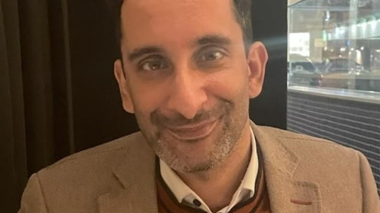

候任人权专员达塔尼（Birju Dattani）因涉嫌反犹言论，在履新前一天休假候查。
照片：(Birju Dattani/LinkedIn)
RCI
候任人权专员达塔尼（Birju Dattani）被指早年在网上發表反猶太言論，在履新前一天休假。
司法部长维拉尼（Arif Virani）说，已收到事件的審查報告，將仔细考虑事件，期間达塔尼同意休假。
维拉尼指，未来几天将会有更多消息。目前首要任务，是确保外界对加拿大人权委员会（Canadian Human Rights Commission, CHRC）及其首席专员保持信心。
司法部长维拉尼（Arif Virani）。
照片：The Canadian Press / Spencer Colby
今年六月，政府宣布达塔尼的任命，及后一个加拿大犹太人权益组织指出达塔尼过去在社交媒体上的帖文，具有反犹太倾向。
加拿大犹太人权益组织投诉
他被指在2014年在社交平台推特（现为Ｘ）上，将以色列与纳粹主义相比。
该帖文连同整个帐户目前已被删除。
达塔尼否认将以色列与纳粹主义相提并论，表示这种比较 令人反感和可憎
。
他承认当年曾分享一篇题为巴勒斯坦人是今日华沙犹太人区的囚徒
的文章，但没有发表评论。他补充说，当时正在学术上研究相关题目，他不同意该文章的说法。
另外，2015 年，达塔尼曾在英国一个小组讨论会上发表讲话，小组上包括伊斯兰解放党（Hizb ut-Tahrir）一名成员。该党为伊斯兰原教旨主义组织，寻求建立新的哈里发国，反对以色列的存在。
达塔尼表示，他不知道其他与会成员的背景，事前也从未见过他们。
以色列和犹太人事务中心 （Centre for Israel and Jewish Affairs）反对他的任命，称任命这样一个背景漏洞百出的人，只会加剧公众对CHRC的怀疑，削弱我们对CHRC审理仇恨及歧视个案的信心
乌干达难民之子
达塔尼为一名人权律师，来自艾伯塔省，他的父亲是东非乌干达难民。
他在伦敦政治经济学院修读法律后，曾在伦敦大学东方和非洲研究学院教授法律，并曾任育空地区人权委员会担任总监。
司法部最初称，不知道有这些帖文，后来解释，是因为达塔尼以化名Mujahid Dattani发文。
负责对任命进行背景调查的枢密院办公室称，在发现相关化名后，已再进行背景审查。
保守党副领袖兰茨曼（Melissa Lantsman）呼吁解雇达塔尼。她指审查报告欠透明，一切都由试图掩盖事件的自由党人一手策划。
达塔尼的律师表示，达塔尼已按政府要求披露所有信息，目前没有任何评论。
David Baxter de CBC News, avec les informations de Darren Major. Adaptation en chinois par Donna Chan.
文章来源于RCI:新任人权专员疑发表反犹言论休假